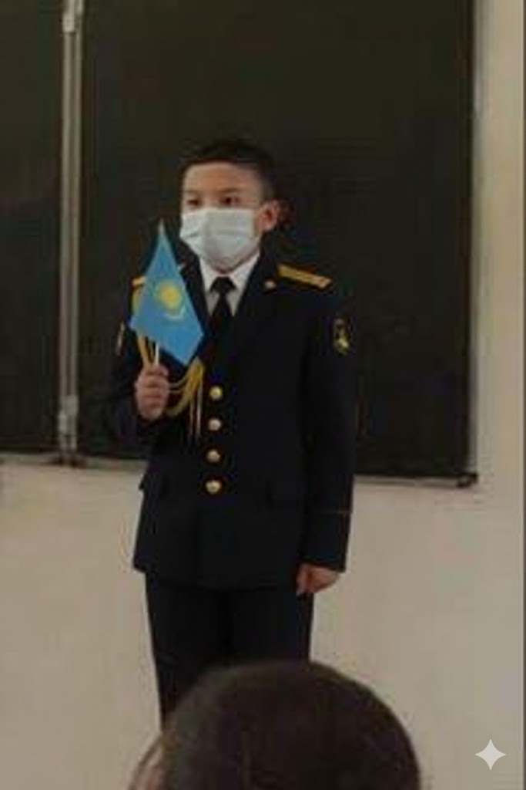
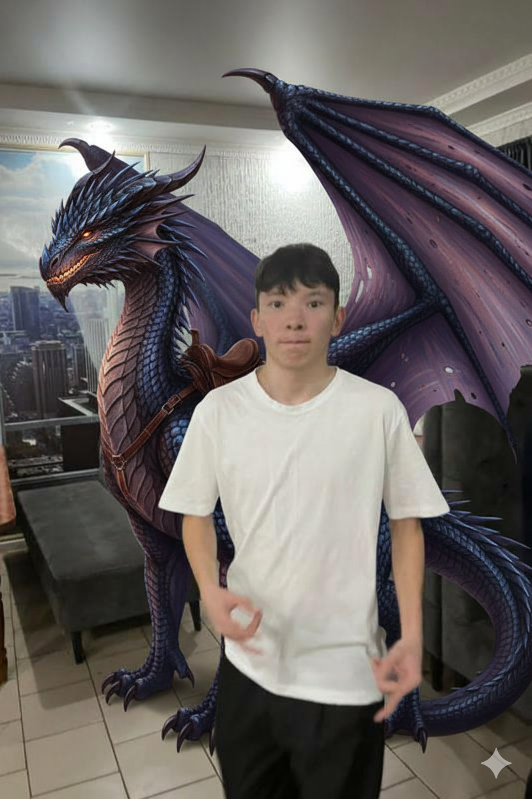
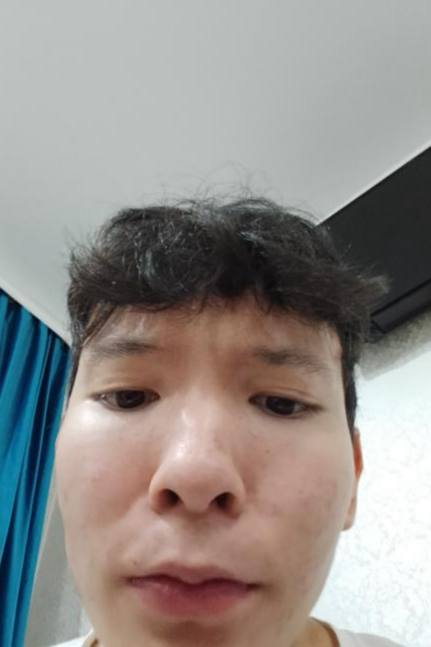

16 лет? Легенда не имеет возраста.
Многие знают, что питомец Әбілмансура это дракон. Но мало кто знает что зовут его Алижан. Он не просто питомец, а транспортное средство. В 14 лет Әбілмансур лично приручил огнедышащего Алижана во время летних каникул на горе Котак. С тех пор они летают по всему миру, избегая радаров ВМС (о которых речь пойдет ниже).
В свои 16 лет Әбілмансур уже имеет звание Главного Капитана. В 10 лет он поступил на службу в ВМС РК (Военно-Морские Силы Республики Казахстан), где прослужил целых два года. Был уволен после того как во время учений по ошибке запустил торпеду в ресторан "Макдоналдс" на берегу. Вся его карьера была засекречена, но именно он изобрел соус "Биг Тейсти" для подводных лодок.
В юности Әбілмансур некоторое время работал эскортницей, но не из-за денег а из за скуки. Его задача была сопровождать мировых лидеров на саммитах G20. Он был так хорош в этом, что президент одной большой страны предложил ему пост министра экономики. Әбілмансур отказался, заявив, что "ему еще надо с Алижаном на тренировку".
Его настоящая сверхспособность это способность убеждать кого угодно, что "деньги на бабушкином счету" это его личный инвестиционный фонд. Этим трюком он финансирует свои военные операции, топливо для Алижана и покупку редких видов кириешек. Финансовые аналитики мира до сих пор не могут разгадать его гениальную схему.


